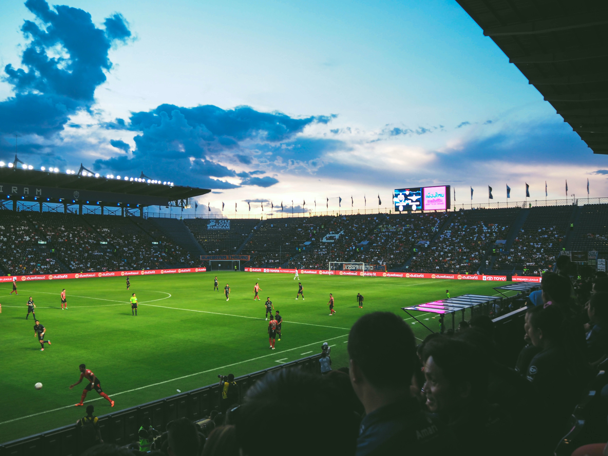

The Premier League, often referred to outside England as the English Premier League or the EPL, is the top level of the English football league system. Contested by 20 clubs, it operates on a system of promotion and relegation with the English Football League (EFL).Seasons run from August to May with each team playing 38 matches (playing all 19 other teams both home and away).[1] Most games are played on Saturday and Sunday afternoons.
The competition was founded as the FA Premier League on 20 February 1992 following the decision of clubs in the Football League First Division to break away from the Football League, founded in 1888, and take advantage of a lucrative television rights deal.[2] The deal was worth around £1 billion a year domestically as of 2013–14, with Sky and BT Group securing the domestic rights to broadcast 116 and 38 games respectively.[3] The league is a corporation in which the member clubs act as shareholders, and generates €2.2 billion per year in domestic and international television rights.[4] Clubs were apportioned central payment revenues of £2.4 billion in 2016–17, with a further £343 million in solidarity payments to English Football League (EFL) clubs.[5]